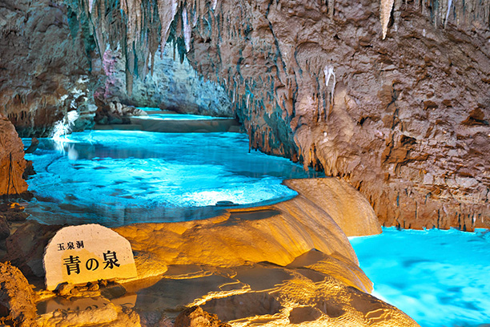

沖縄ってどんなところ？
沖縄県は、日本の一番南にある県で、160以上の島々からできています。青く美しい海やサンゴ礁、温かい気候、そして独自の文化が特徴です。日本の本州とは異なる雰囲気があり、「南国の楽園」とも呼ばれています。
沖縄の場所を地図で見てみよう
沖縄県は日本の南西に位置し、台湾の近くにあります。以下の地図で場所を確認できます。
沖縄の歴史
昔、沖縄には「琉球王国（りゅうきゅうおうこく）」という国があり、中国や日本、東南アジアと貿易をしていました。1879年に日本に組み込まれ、「沖縄県」となりました。第二次世界大戦では、沖縄で激しい戦いが行われ、多くの人が犠牲になりました。その後アメリカに支配され、1972年に日本に返還されました。
沖縄の文化
沖縄の文化は、他の日本の地域とは少し違います。「うちなーぐち」と呼ばれる方言や、「三線（さんしん）」という楽器、伝統舞踊、紅型（びんがた）という染物などがあります。宗教も独自で、祖先を大切にする文化が今でも強く残っています。
沖縄の自然と観光地
- 古宇利島： 橋で渡れる美しい島。ドライブに人気。
- 美ら海水族館： ジンベエザメが見られる巨大水族館。
- 首里城： 琉球王国のシンボル。現在は復元中。
- 斎場御嶽（せーふぁうたき）： 神聖な祈りの場所。世界遺産。
沖縄には他にも、離島（石垣島、西表島、竹富島など）や、マングローブ、滝など自然がいっぱいです。
行った方がいい沖縄のおすすめスポット
- 美ら海水族館： 世界最大級の水族館。ジンベエザメやマンタを見ることができます。
- 古宇利島： 美しい海と橋が有名な離島。絶景ドライブスポット。
- 首里城公園： 琉球王国の歴史を感じる世界遺産（現在復元作業中）。
- 国際通り： 那覇市のメインストリート。お土産やグルメが楽しめます。
- 斎場御嶽： 沖縄最高の聖地で、自然の中に神聖な雰囲気が漂います。
- 竹富島： 昔ながらの沖縄の町並みが残る離島。のんびり散策に最適。
- 万座毛： 海に突き出た断崖絶壁の景勝地。夕日スポットとしても有名。
これらのスポットは沖縄の魅力がぎゅっと詰まっています。初めて行く方もリピーターの方も、ぜひ訪れてみてください！
沖縄の料理
- ゴーヤーチャンプルー： 苦瓜と豆腐、豚肉の炒め物
- 沖縄そば： 太めの麺と豚肉、かつお出汁のスープ
- ラフテー： とろとろの豚の角煮
- 海ぶどう： プチプチ食感の海藻
- サーターアンダギー： 揚げドーナツのようなお菓子
イベント・行事
沖縄では、旧盆（きゅうぼん）や旧正月、エイサー祭りなど、旧暦に合わせた行事が行われます。中でも「エイサー」は、太鼓を打ちながら踊る伝統舞踊で、夏になると各地で見られます。
現代の沖縄
沖縄は観光地として人気があり、多くの観光客が訪れます。一方で、アメリカ軍基地の問題や経済の課題などもあります。若い世代は、沖縄の文化を守りながら、新しい音楽・アート・ビジネスに挑戦しています。